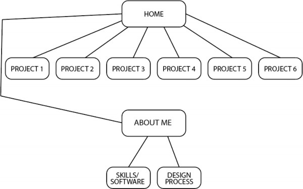
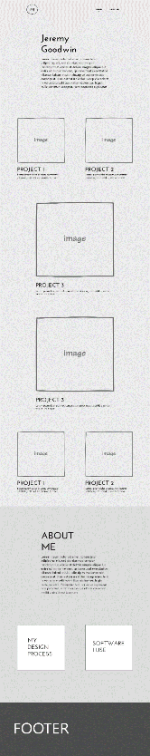
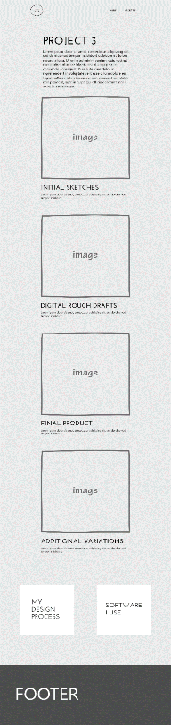

Client and Topic
For this website I plan to design a personal portfolio of some of the work I have done in the last three years. This website will mainly just be a showcase and not require anyone to log in or make any purchases.
Development Process and Engagement
This website will be designed specifically for myself in a way that presents myself to other people through a brief introduction and the design. I believe the best way to research a website like this will be to look at the current best practices and review portfolios of other students around the world.
Luckily, this website is only required to be ten pages in length, so navigating through ten pages and making sure that they work is not going to be too difficult. Obviously, my code will be run though validators to check on the code but there will be other tests such as different browsers and having others look through it as well. The browsers I intend to check my page on are Google Chrome, Firefox, Microsoft Edge, and Safari.
This website is specifically meant for me to display the work I have created up to this point. It is meant to market me to others based on the work that I have done including my processes, designs, and design choices. The true purpose of this is to give others an idea of what I can do and the type of designs that I typically engage in.
The intended target for this website would be peers, especially companies looking to hire me. This would include current UI/UX and Product Designers and their managers, potential clients of all ages and backgrounds for freelance work, and just for others to get inspiration from. This website is created simply for all to view who I am as a designer rather than tailor to one specific group like hiring managers or everyday viewers.
This website will include designs that have been completely made by me. I plan I intend on designing the majority of the content including the colors, choice of fonts, many elements,
and the structure itself. This will allow for an even deeper description of the work that I am capable of and make my work that much more marketable. Design inspiration will be taken from other portfolios which will be cited in Project 4 along with some icons and fonts. Ideally this website will be updated as trends change. This could meant the website gets updated weekly, monthly, or yearly depending upon the current trends in web development.
There is a lot of room for growth in the future. As the projects that I work on continue to expand I will be able to update the website with new and better projects while removing older, worse projects. To keep the website easier to maintain I plan to industry standards and use bootstrap to keep my website clean and professional. Since my website will likely be a low- maintenance website due to its lack of an online store and log-in requirements, the only maintenance that I will have to do is to test to make sure everything is working periodically and keep the images up to date. This should only happen once a month or whenever a large new bootstrap version is released.
The plan for the website and how it will be organized is portrayed in Figure 1 below.

Figure 1 - Storyboard of Project 4
Every individual page will be viewable on a large, scrollable main page labeled “HOME” The different pages will be linked to pages with more information about the topic. For instance, the Project 1 thumbnail on the home page will be the finished project, but when the viewer click the thumbnail, they will be redirected to a page that shows a much more detailed description of each project including the design processes.
A wireframe of the home page is included below in Figure 2.

Figure 2- Homepage Wireframe
Also included below is an image of what the design of a project page will look like.

Figure 3 - Project 3 Web Page
While my website will not have major components that require massive amounts of security there are still some areas to consider. For instance, I would love for others to get inspiration from my work, but I need to make sure that my projects are protected from being copied and reused. There should not be any other need for security on my website though simple because
Since the project that I will be working on is not affiliated with an online marketplace or any outside services, it will make web hosting much simpler for me. I will only need a host that can allow for low-medium traffic with no special capabilities other than a viewing experience. This website will use a combination of HTML, CSS, and JavaScript along with bootstrap and some other libraries that will aid in the design of the website. An appropriate domain name that I would use for this website that is currently available is thejeremygoodwin.com. Since my name is not available in a .com domain, the addition of “the” will have to work.
One of the big things that I intend to cover on my website is the use of meta tags with keywords to allow for better search engine optimization. This website will welcome as much organic traffic as possible, but the main point of marketing will be through myself or through my social media accounts where I plan to have the website linked.
For this project I used two programs to create the storyboard and the wireframes. For the storyboard I used Adobe Illustrator. For the wireframes I used Adobe XD in combination with a wireframe pack I have used since my first project. This was the obvious choice for me as I have been using these programs pretty heavily throughout my design career. The flowchart really helped me visualize the direction I wanted to take with this website and the content that I wanted to include as well. I ended up choosing to use other websites than suggested since I am more familiar with other programs that saved me some time in designing. The navigation was actually one of the harder parts of the design ironically. While it appears simple I had to
debate back and forth with myself if there should be more information and tabs included in the navigation or if I should keep it concise and clean. I ended up choosing to keep it less cluttered and let the rest of the page design shine through in an attempt to not overload the eye and suggest the viewer to dive deeper into the content that I choose to put on the website.
Another challenge I faced in this design was the layout of the home page. I was debating between having all the projects the same size and not adding variation, but after completing that design I realized that there needs to be some form of visual hierarchy to display the more important pieces of work that I have created. This is why there are two larger content boxes for my projects. I am very excited for the design of this website and I cant wait to see how it turns out!